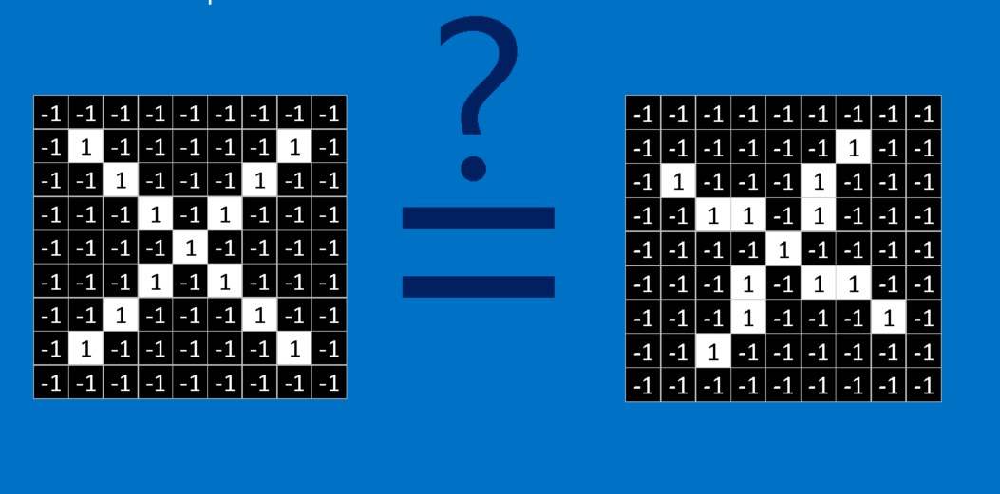
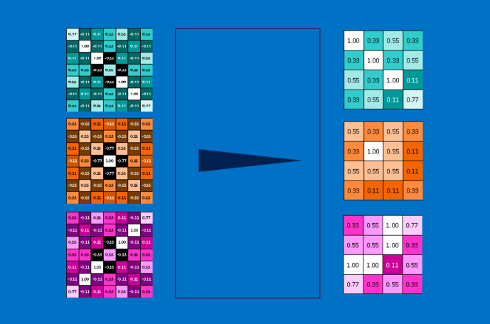
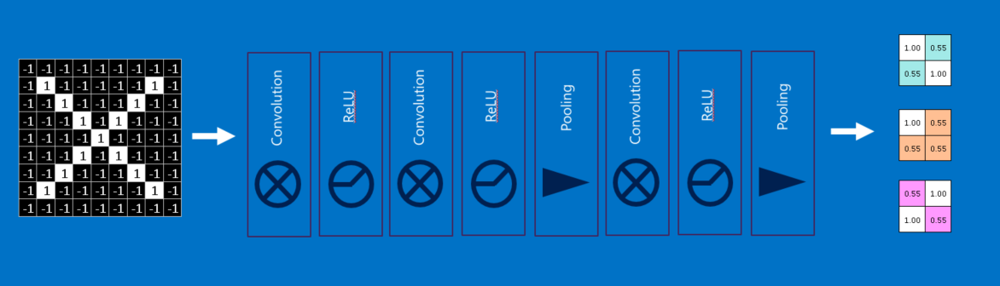
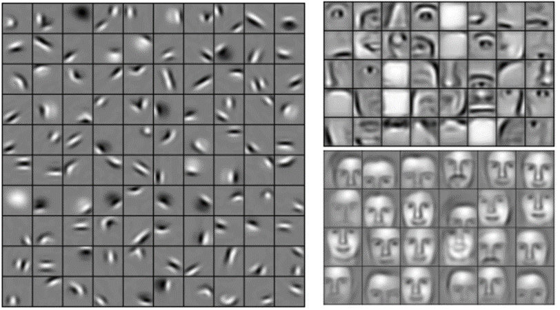

pdf [2MB] ppt [6MB] Japanese version Farsi version
MATLAB and Caffe implementations for NVIDIA GPUs
نسخه دوبله فارسی این ویدئو به زودی جایگزین می شود...
از هر 10 باری که می شنوید یادگیری ژرف (deep learning) یک مانع جدید از فن آوری را شکسته است، 9 بار آن پای شبکه های عصبی پیچیده (Convolutional Neural Networks) در میان است. که CNNs یا ConvNets نیز نامیده می شوند، آن ها اسب های بارکش میدان شبکه عصبی ژرف هستند. آن ها یاد گرفته اند که تصاویر را در بعضی موارد حتی بهتر از انسان به دسته های مختلف طبقه بندی کنند.
مزیت بارز آن ها این است که راحت فهمیده می شوند، حداقل هنگامی که به قسمت های اصلی شکسته شوند. من شما را در این مسیر پیش خواهم برد. یک ویدئو با جزئیات دقیق تر نیز وجود دارد، در هر نقطه ای که سررشته مطلب را از دست دادید، روی یک تصویر کلیک کنید تا به آن قسمت از ویدئو بروید.
X و O

از یک مثال ساده سازی شده برای هدایت مسیرمان در شبکه عصبی کانولوشنی استفاده می کنیم: تعیین این که یک تصویر X است یا O. این مثال به قدر کافی غنی است که اصول CNN را به نمایش بگذارد اما به اندازه ی کافی ساده است که از گرفتار شدن در جزئیات غیرضروری جلوگیری کند. CNN ما یک وظیفه دارد. هر بار که یک تصویر به آن می دهیم، باید تصمیم بگیرد که آیا تصویر حاوی X است یا O. فرض بر این است که همیشه یکی از این دو حالت برقرار است.
یک رویکرد ساده انگارانه برای حل این مساله ذخیره کردن یک تصویر از X و O و مقایسه هر تصویر جدید با نمونه های ما است تا ببینم با کدام یک تطبیق بیشتری دارد. چیزی که این کار را مشکل می کند این است که کامپیوترها بسیار دقیق (ملانقطه ای!) هستند. برای یک کامپیوتر یک تصویر شبیه به یک آرایه ی دو بعدی از پیکسل ها است (شبیه به یک صفحه شطرنج بزرگ) با یک شماره در هر خانه. در مثال ما یک پیکسل با مقدار 1 سفید است و 1- سیاه. در مقایسه ی دو تصویر، اگر هر کدام از مقادیر یکسان نباشند تصاویر نیز یکسان نیستند حداقل از نظر کامپیوتر. در حالت ایده آل، ما مایلیم که Xها و Oها را ببینیم حتی اگر منتقل شده باشند، کوچک شده باشند، چرخیده باشند یا دچار تغییر شکل شده باشند. این جا جایی است که CNNها به میان می آیند.
ویژگی ها

CNNها تصاویر را قطعه به قطعه مقایسه می کنند. قطعاتی که در جستجوی آن هستند، ویژگی ها (features) نامیده می شوند. CNNها با یافتن ویژگی های برجسته تقریبا در مکان های یکسانی از دو تصویر، نسبت به طرح تطبیق کل تصویر بسیار بهتر عمل می کنند.

هر ویژگی مانند یک مینی-تصویر (تصویر کوچک) است – یک آرایه ی دو بعدی کوچک از مقادیر. ویژگی ها با جنبه های مشترکی از تصاویر مطابقت دارند. در مورد تصاویر X، ویژگی های متشکل از خطوط مورب و یک ضربدر (تقاطع) تمام مشخصات مهم اکثر Xها را دارند. این ویژگی ها احتمالا به بازوها و مرکز هر تصویری از X منطبق می شوند.
کانولوشن

هنگامی که یک تصویر جدید ارائه می شود، CNN دقیقا نمی داند این ویژگی ها با کجا تطبیق خواهند یافت پس آن ها را در همه جا آزمایش می کند، در هر موقعیت ممکن. در جستجوی تطبیق برای یک ویژگی در سراسر تصویر، یک فیلتر می سازیم. ریاضیاتی که برای انجام این کار استفاده می کنیم، کانولوشن نامیده می شود که شبکه های عصبی کانولوشنی نام خود را از آن گرفته است.
ریاضیات پشت کانولوشن چیزی نیست که حتی برای یک کلاس ششمی سخت باشد. برای محاسبه ی تطابق یک ویژگی با یک پچ (قطعه) از تصویر، هر پیکسل در ویژگی را با مقدار پیکسل متناظر آن در تصویر ضرب کنید. سپس جواب ها را با هم جمع کنید و تقسیم بر مجموع تعداد پیکسل ها در ویژگی کنید. اگر هر دو پیکسل سفید (مقدار 1) باشند، پس 1=1*1. اگر هر دو سیاه باشند، پس 1=(1-)*(1-). در هر صورت، هر دو پیکسل منطبق جواب 1 می دهند. به طور مشابه، هر عدم تطابق نتیجه ی 1- می دهد. اگر تمام پیکسل های یک ویژگی تطابق داشته باشند، مجموع آن ها تقسیم بر تعداد کل پیکسل ها نتیجه 1 می دهد. به طور مشابه اگر هیچ کدام از پیکسل های ویژگی با پچ تصویر مطابقت نداشته باشد، جواب 1- است.

برای تکمیل کانولوشن، ما این فرایند را با تنظیم کردن ویژگی با هر پچ ممکن از تصویر تکرار می کنیم. می توانیم هر جواب را از کانولوشن بگیریم و یک آرایه ی دو بعدی جدید از آن بسازیم، بر اساس این که هر پچ در کجای تصویر قرار دارد. این نقشه از تطبیق ها، یک نسخه ی فیلتر شده از تصویر اصلی ما نیز هست. نقشه ای است که نشان می دهد که آن ویژگی در کجای تصویر یافته شده است. مقادیر نزدیک به 1 مطابقت های قوی را نشان می دهند، مقادیر نزدیک به 1- مطابقت قوی برای نگاتیو (منفی) عکسی ویژگی ما را نشان می دهند و مقادیر نزدیک به صفر هیچ گونه تطبیقی نشان نمی دهند.

گام بعدی تکرار فرآیند کانولوشن به طور کامل برای هر یک از ویژگی های دیگر است. نتیجه مجموعه ای از تصاویر فیلتر شده است، یک تصویر برای هر یک از فیلترها. آسان تر است که به مجموعه ی کامل عملیات کانولوشن به عنوان یک مرحله پردازش فکر کنیم. در CNN به آن به عنوان یک لایه کانولوشن اشاره می شود، که به این واقعیت اشاره می کند که به زودی لایه های دیگری به آن اضافه خواهد شد.
به آسانی می توان دید که CNNها مشهوریت خود را به عنوان خوک محاسبات از کجا گرفته اند (حجم محاسباتی بالایی دارند). اگر چه ما می توانیم CNN را پشت یک دستمال سفره بکشیم، اما تعداد جمع ها، ضرب ها و تقسیم ها می تواند به سرعت بالا برود. به زبان ریاضی، آنها با تعداد پیکسل در تصویر، با تعداد پیکسل در هر یک از ویژگی ها و با تعداد ویژگی ها مقیاس خطی دارند. با این تعداد زیاد عوامل، این مساله به راحتی میلیون ها بار بزرگ تر می شود، بدون هیچ زحمتی. جای تعجب نیست که تولید کنندگان ریزتراشه ها در حال ساخت تراشه های تخصصی در تلاش برای برآورده کردن نیازهای CNNها هستند.
ادغام (Pooling)
ابزار قدرتمند دیگری که CNNها از آن استفاده می کنند، ادغام است. ادغام روشی است برای گرفتن تصاویر بزرگ و کوچک کردن آن ها در حالی که مهم ترین اطلاعات آن ها حفظ می شود. ریاضی پشت ادغام نهایتا در سطح کلاس دوم است. این روش متشکل است از گذاشتن یک پنجره در سراسر یک تصویر و گرفتن بیشترین مقدار از آن پنجره در هر گام است. در عمل، یک پنجره با ضلع 2 یا 3 پیکسل و گام های 2 پیکسلی به خوبی جواب می دهد.
پس از ادغام، یک تصویر یک چهارم تعداد پیکسلی را دارد که با آن شروع کرده بود. از آن جا که مقادیر ماکزیمم از هر پنجره نگه داشته می شود، بهترین وجه هر ویژگی درون پنجره حفظ می شود. یعنی تا وقتی که ویژگی جایی درون پنجره منطبق شود به این اهمیت نمی دهد که دقیقا کجا قرار دارد. در نتیجه CNNها می توانند بفهمند که آیا یک ویژگی درون یک تصویر است، بدون نگرانی راجع به مکان آن. این کمک می کند که مشکل بیش از حد دقیق (ملانقطه ای) بودن کامپیوتر ها حل شود.
یک لایه ی ادغام فقط عملیات اجرای ادغام بر روی یک تصویر یا مجموعه ای از تصاویر است. خروجی همان تعداد تصویر را خواهد داشت، ولی هر کدام تعداد پیکسل کمتری خواهند داشت. این مرحله همچنین برای بار محاسباتی نیز مفید است. تبدیل یک تصویر 8 مگاپیکسلی به 2 مگاپیکسل زندگی را برای هرگونه عملیات بعدی بسیار آسان تر می کند.
واحد یکسوسازی خطی
یک بازیگر کوچک اما مهم در این فرایند واحد یکسوسازی خطی یا ReLU است. ریاضیات آن نیز بسیار ساده است، هر کجا که یک عدد منفی رخ می دهد، آن را با صفر جایگزین کن. این کمک می کند تا CNN با جلوگیری از گیر کردن مقادیر یاد گرفته شده نزدیک به صفر یا میل به بی نهایت، از لحاظ ریاضی سالم بماند. این واحد گریس محور CNNها است-خیلی به چشم نمی آید، اما بدون آن کاری چندانی از آن ها ساخته نیست.

خروجی یک لایه ReLU به همان اندازه ی ورودی آن است، فقط تمام مقادیر منفی آن حذف می شود.
یادگیری عمیق
احتمالا متوجه شده اید که ورودی هر لایه (آرایه های دو بعدی) بسیار شبیه به خروجی (آرایه های دو بعدی) است. به این دلیل، ما می توانیم آنها را مانند قطعات لگو پشته (stack) کنیم. تصاویر خام فیلتر، یکسوسازی و ادغام می شوند تا یک مجموعه تصاویر فیلتر شده با ویژگی ها و کوچک شده به دست آید. این تصاویر را می توان دوباره و دوباره فیلتر و کوچک کرد. هر بار، ویژگی های بزرگتر و پیچیده تر می شوند و تصاویر فشرده تر می شوند. این باعث می شود که لایه های پایین تر نشان دهنده جنبه های ساده ی تصویر مانند لبه ها و نقاط روشن باشند. لایه های بالاتر می توانند جنبه های پیچیده تری از تصویر، مانند اشکال و الگوها را نشان دهند. که به آسانی قابل تشخیص هستند. به عنوان مثال، در یک CNN آموزش دیده بر چهره انسان، بالاترین لایه ها نشان دهنده الگوهایی هستند که به وضوح مانند چهره اند.
لایه های کاملا متصل
CNNها یک تیر دیگر در تیردان خود دارند. لایه های کاملا متصل تصاویر فیلتر شده ی سطح بالا را می گیرند و آنها را به رای ترجمه می کنند. در این مثال فقط باید بین دو دسته، X و O تصمیم گیری کنیم. لایه های کاملا متصل، بلوک اصلی ساختمان شبکه های عصبی سنتی هستند. به جای کار با ورودی ها به عنوان یک آرایه دو بعدی، آن ها را به عنوان یک لیست واحد در نظر می گیرند و با همه مقادیر مشابه رفتار می شود. هر مقدار رای خود را در مورد اینکه آیا تصویر فعلی یک X است و یا O می دهد. با این حال، این فرایند کاملا دموکراتیک نیست. برخی از مقادیر در دانستن این که چه زمانی تصویر یک X است، بسیار بهتر از دیگر مقادیر هستند و برخی از آنها به طور خاص در تشخیص O خوب هستند. این آرا به عنوان وزن یا قدرت اتصال بین هر مقدار و هر دسته بیان می شوند.
هنگامی که یک تصویر جدید به CNN ارائه می شود، از لایه های پایین تر عبور می کند تا این که در پایان به لایه کاملا متصل می رسد. سپس انتخابات برگزار می شود. پاسخ با بیشترین رأی می برد و دسته ورودی اعلام می شود.
لایه های کاملا متصل را نیز می توان مثل بقیه پشته کرد، چون خروجی آن ها (لیستی از رای ها) شباهت زیادی به ورودی آن ها (یک لیست از مقادیر) دارد. در عمل، چند لایه کاملا متصل اغلب با هم پشته می شوند، بدین گونه که هر لایه ی میانی به دسته های "پنهان" رای می دهد. در واقع، هر لایه ی اضافی به شبکه امکان یادگیری ترکیب های پیچیده تری از ویژگی ها را می دهد که به تصمیم گیری بهتر کمک آن می کند.
پس انتشار (Backpropagation)
داستان ما به خوبی پیش می رود، اما هنوز یک مشکل بزرگ دارد – ویژگی ها از کجا آمده اند؟ و چگونه وزن ها را در لایه کاملا متصل پیدا کنیم؟ اگر همه ی این ها را باید دستی انتخاب می کردیم، CNNها محبوبیت بسیار کمتری داشتند. خوشبختانه، کمی از جادوی یادگیری ماشین (machine learning) به نام پس انتشار این کار را برای ما انجام می دهد.
برای استفاده از پس انتشار، نیاز به مجموعه ای از تصاویری داریم که پاسخ آن ها را از قبل می دانیم. یعنی یک آدم خیلی صبور هزاران تصویر را بررسی کرده و یک برچسب X یا O به آن ها تخصیص داده است. ما آن ها را بر روی یک CNN آموزش ندیده به کار می بریم، به این معنی که هر پیکسل از هر ویژگی و هر وزن در هر لایه کاملا متصل به یک مقدار تصادفی تنظیم می شود. سپس ما شروع به دادن تصاویر به آن، یکی پس از دیگری می کنیم.
هر تصویری که CNN پردازش می کند، یک رای نتیجه می دهد. مقدار نادرستی رای، خطا، به ما می گوید که ویژگی ها و وزن های ما چقدر خوب هستند. ویژگی ها و وزن ها به گونه ای تنظیم می شوند که خطا کمتر شود. هر مقدار کمی بالاتر و کمی پایین تر تنظیم می شود و هر بار خطای جدید محاسبه می شود. هر کدام از تنظیماتی که باعث می شود خطا کمتر باشد، نگه داشته می شود. پس از انجام این کار برای هر پیکسل ویژگی در هر لایه کانولوشن و هر وزن در هر لایه کاملا متصل، وزن های جدید پاسخی می دهند که کمی بهتر برای آن تصویر کار می کند. سپس این روند برای هر تصویر بعدی در مجموعه ای از تصاویر دارای برچسب تکرار می شود. استثنائاتی که در یک تصویر واحد رخ می دهد به سرعت فراموش می شوند، الگوهایی که در تعداد زیادی از تصاویر رخ می دهند، در قالب ویژگی ها و وزن های اتصال حفظ می شوند. اگر به اندازه کافی تصاویر دارای برچسب داشته باشید، این مقادیر به صورت مجموعه ای تثبیت می شوند که برای طیف گسترده ای از تصاویر به خوبی جواب می دهد.
همانطور که احتمالا آشکار است، پس انتشار یک گام محاسباتی گران دیگر است، و محرک دیگری برای سخت افزار محاسباتی تخصصی شده است.
فراپارامترها (Hyperparameters)
متاسفانه، یادگیری همه ی جنبه های CNNها به این سرراستی نیست. هنوز یک لیست طولانی از تصمیماتی وجود دارد که یک طراح CNN باید بگیرد.
- چند ویژگی برای هر لایه کانولوشن؟ چه تعداد پیکسل در هر ویژگی؟
- برای هر لایه ادغام، چه اندازه پنجره؟ چه تعداد گام؟
- برای هر لایه کاملا متصل اضافی، چه تعداد نورون پنهان؟
علاوه بر این ها سطح بالاتری از تصمیم گیری های معماری نیز وجود دارد: چه تعداد از هر لایه به کار گرفته شود؟ به چه ترتیبی؟ برخی شبکه های عصبی عمیق می توانند بیش از هزار لایه داشته باشند، که احتمالات بسیاری را پیش می آورد.
با این تعداد زیاد از ترکیب ها و جایگشت ها، تنها بخش کوچکی از تنظیمات ممکن برای CNN آزمایش شده است. طراحی های CNN معمولا توسط دانش انباشته شده جامعه هدایت می شوند، با انحراف های گاه به گاهی که جهش شگفت آوری در عملکرد نشان می دهند. و در حالی که ما بلوک های ساختمان CNN را پوشش داده ایم، ترفندهای بسیاری دیگری امتحان شده و موثر بوده است، مانند انواع لایه های جدید و روش های پیچیده تر برای اتصال لایه ها با یکدیگر.
فراتر از تصاویر
در حالی که مثال X و O ما شامل تصاویر است، CNNها را می توان برای طبقه بندی انواع دیگر داده مورد استفاده قرار داد. ترفند این است، هر نوع داده ای که با آن شروع می کنید را به گونه ای تبدیل کنید که مانند یک تصویر به نظر برسد. به عنوان مثال، سیگنال های صوتی را می توان به قطعه های زمان کوتاه تقسیم کرد، و سپس هر قطعه را به باندهای فرکانسی باس، میانی، تربل و یا ریزتر شکست. این را می توان به عنوان یک آرایه دو بعدی که در آن هر ستون یک قطعه است و هر سطر یک باند فرکانس است، نشان داد. در این تصویر جعلی "پیکسل"هایی که به هم نزدیک هستند، ارتباط نزدیکی دارند. CNNها بر روی آن به خوبی کار می کنند. محققان کاملا خلاقانه عمل کرده اند. آنها داده های متنی برای پردازش زبان طبیعی و حتی داده های شیمیایی برای کشف مواد مخدر را نیز اقتباس کرده اند.
نمونه ای از داده هایی که مناسب این قالب نیست داده های مشتری است، که در آن هر سطر در جدول نشان دهنده یک مشتری است، و هر ستون نشان دهنده اطلاعات در مورد آنها، مانند نام، آدرس، ایمیل و خرید. در این مورد، محل سطر و ستون واقعا مهم نیست. ردیف ها را می توان دوباره مرتب کرد و ستون ها را می توان بازآرایی کرد، بدون از دست دادن هیچ اطلاعات مفیدی. در مقابل، تغییر ترتیب سطر و ستون یک تصویر آن را تا حد زیادی غیرقابل استفاده می کند.
یک محاسبه سرانگشتی: اگر اطلاعات شما پس از مبادله هر یک از ستون ها با یکدیگر به همان اندازه ی اولیه مفید و قابل استفاده باشند، شما نمی توانید از شبکه های عصبی کانولوشنی استفاده کنید.
با این حال اگر می توانید مساله ی خود به گونه ای مطرح کنید که مانند پیدا کردن الگوها در یک تصویر باشد، ممکن است CNN دقیقا آن چیزی باشد که نیاز دارید.
بیشتر بیاموزید
برای جزئیات بیشتر به منابع زیر مراجعه کنید
MATLAB and Caffe implementations for NVIDIA GPUs
Demystifying Deep Learning post
notes from the Stanford CS 231 course
ابزارهای محبوب در مبحث یادگیری عمیق: